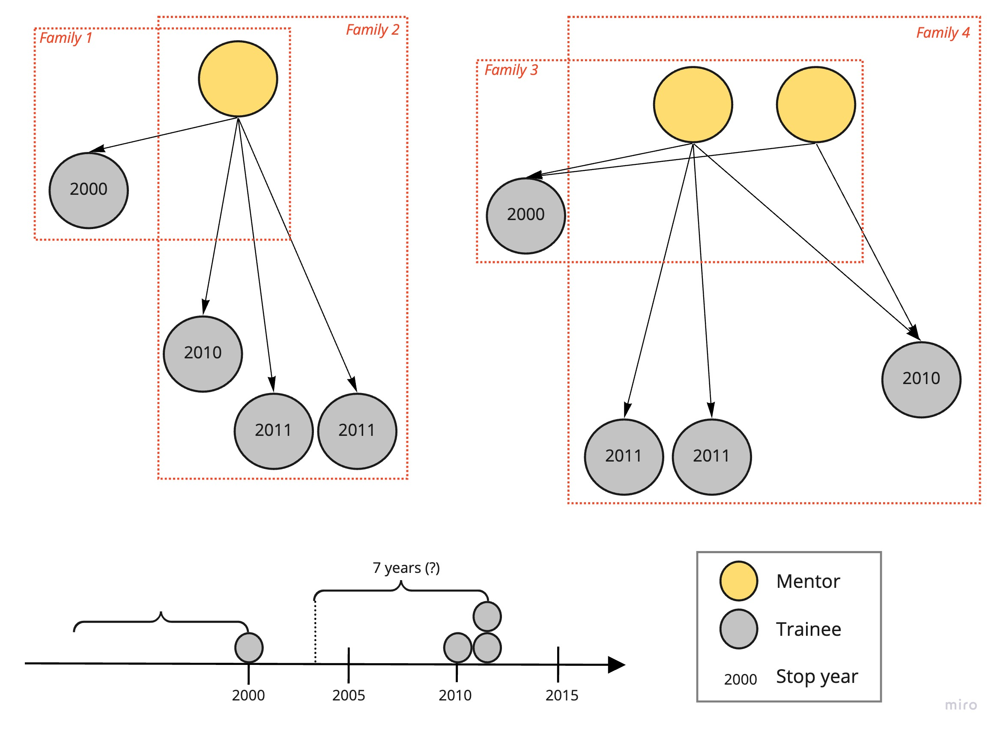

For S4
Notes from docs.google

Area
Figure 1: Gender structure by aras
Mentors

Trainees

Year
Figure 2: Count mentors by years
Total

By main areas

Reflection: what “family” is?

Family 1. Single parent with child
Family 2. Single parent: large family with twins
Family 3. Two parents with a child
Family 4. Mixed, with stepparents/stepbrothers/stepsisters
Family 5. …
Conditions trainee entering the “Family”:
through the “parent”(mentor) - necessary condition
through the overlapping study period with other trainees, OR/AND trainees should have the same area (?) OR/AND trainees’ co-publications during the study with one mentor and n years after StopYear (?)
Conditions then mentor entering the “Family”(?) - need to look at reverse logic?